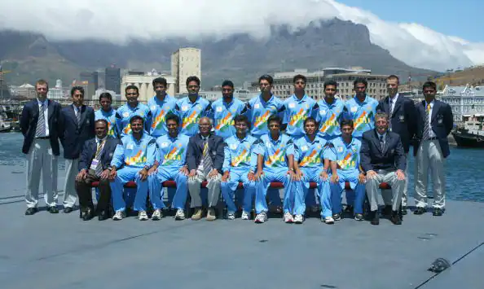
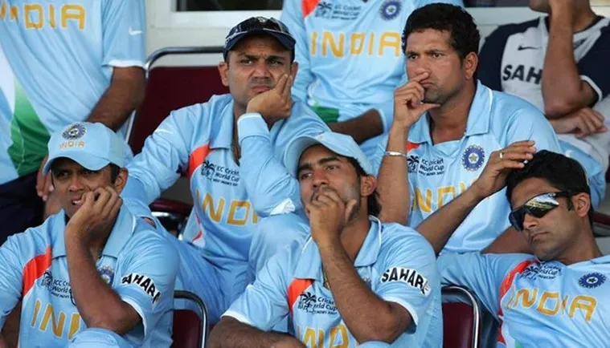

Indian Cricket team in 1999
 The 1999 Cricket World Cup was a significant event for the Indian cricket team, although it wasn't their best tournament performance. The team was led by the legendary batsman Mohammad Azharuddin.
The tournament took place in England from May 14 to June 20, 1999. India had a tough time in the group stage, winning only two out of their eight matches. They secured victories against Kenya and Sri Lanka but suffered defeats against Australia, Zimbabwe, and England, among others.
India's batting lineup boasted remarkable talents like Sachin Tendulkar, Rahul Dravid, Sourav Ganguly, and Azharuddin himself. However, inconsistent performances and a few key losses resulted in India failing to advance beyond the group stage. Tendulkar was the standout performer for India in that tournament, scoring two centuries, including a brilliant 140 against Kenya.
The disappointing performance in the 1999 World Cup led to some introspection within Indian cricket, and it marked a phase of re-evaluation and strategizing for the future tournaments.
The 1999 Cricket World Cup was a significant event for the Indian cricket team, although it wasn't their best tournament performance. The team was led by the legendary batsman Mohammad Azharuddin.
The tournament took place in England from May 14 to June 20, 1999. India had a tough time in the group stage, winning only two out of their eight matches. They secured victories against Kenya and Sri Lanka but suffered defeats against Australia, Zimbabwe, and England, among others.
India's batting lineup boasted remarkable talents like Sachin Tendulkar, Rahul Dravid, Sourav Ganguly, and Azharuddin himself. However, inconsistent performances and a few key losses resulted in India failing to advance beyond the group stage. Tendulkar was the standout performer for India in that tournament, scoring two centuries, including a brilliant 140 against Kenya.
The disappointing performance in the 1999 World Cup led to some introspection within Indian cricket, and it marked a phase of re-evaluation and strategizing for the future tournaments.
Indian Cricket team in 2003

The 2003 Cricket World Cup was a much more memorable tournament for the Indian cricket team. Led by Sourav Ganguly, the team showcased remarkable performances, reaching the final under the coaching of John Wright.
The tournament was co-hosted by South Africa, Zimbabwe, and Kenya from February 9 to March 23, 2003. India had a phenomenal run, topping their group with dominant performances in the preliminary stage. They won all their matches in the group phase, defeating strong teams like Pakistan, England, Zimbabwe, and others.
India's batting lineup was formidable, with players like Sachin Tendulkar, Sourav Ganguly, Rahul Dravid, Virender Sehwag, and Yuvraj Singh displaying consistent and impactful performances. Tendulkar was exceptional throughout the tournament, scoring heavily and finishing as the highest run-scorer.
In the Super Six stage, India continued their winning streak and secured a place in the semifinals. Their semifinal clash against Kenya was a one-sided affair, with India emerging victorious and advancing to the final.
However, in the final match against Australia, India faced a formidable challenge. Australia, led by Ricky Ponting, put on a dominant display, both with the bat and ball. Despite a valiant effort, India fell short, losing to Australia in the final.
Indian Cricket team in 2007

In the 2007 Cricket World Cup, the Indian team, led by Rahul Dravid and including star players like Sachin Tendulkar and Sourav Ganguly, had a rough time. They suffered an unexpected early exit after losing crucial matches, including a surprise defeat to Bangladesh. With just two wins in the group stage, they failed to make it to the next round. This disappointing performance prompted a reevaluation of the team's strategies and structures moving forward.
NEXT